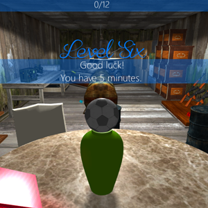
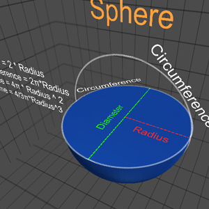
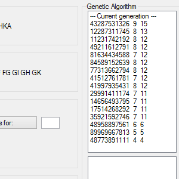
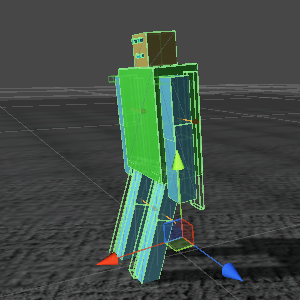

CS
- Website redesign for cs.ubbcluj.ro
The Adventures of Ball
- 3D Platformer

Bwaaaaaaaaa
- Bwaaaaaaaaa
GeO
- Geometric Observer

MCN
- Artifficial Intelligence Problem

FOI
- Fear of Insects
Robot
- Autonomous Robot

Library Manager
- Online Library System